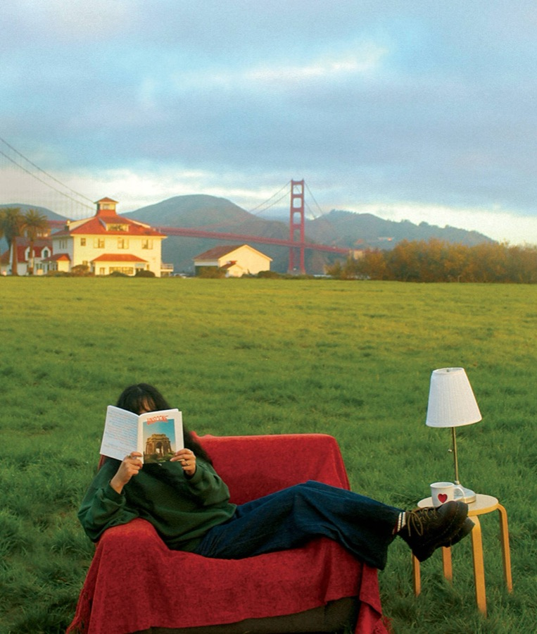
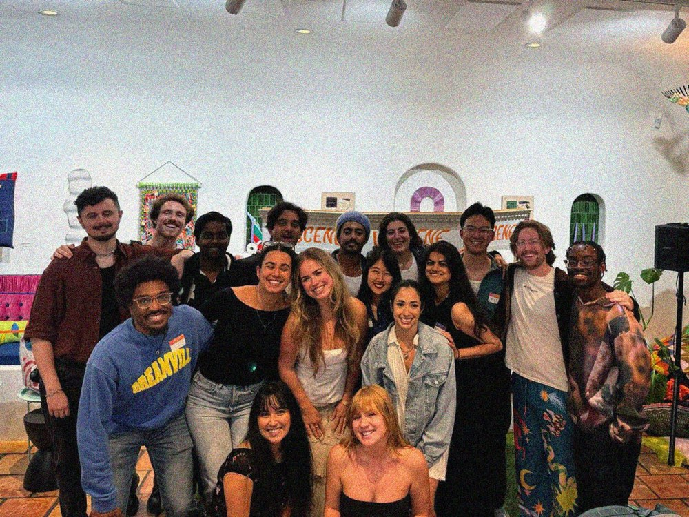

The story
Unscene is a San Francisco literary magazine and 501(c)(3) nonprofit that amplifies local voices and builds community through storytelling, volunteering, and charitable giving. We’re writers, designers, photographers, and everyday people who love the city. We don’t pretend to be reporters; twice a year we publish the personal, slow, human stories happening in San Francisco: profiles, poetry, photo series, satire, even a crossword.
It started at a living room meetup in March 2023. Nine of us chipped in $30 each to print Issue 1, then launched it that August with a party at Manny’s, where we sold enough copies to cover printing twice over.
From there it grew into a bootstrapped nonprofit that has brought in more than $10,000 through issues, launch parties, and merch, and reinvests in local organizations like Haight Street Mutual Aid, GLIDE Memorial, and Farming Hope. Each issue now launches with a party of 100 to 300 people.
After five issues as editor in chief, I handed Unscene to a new team of editors, who carry it on today.

My role
- Founder & editor in chief
- Started Unscene in 2023 and led its first five issues, from pitch to print to launch party, before passing it to my successors.
- Built the team
- Grew the crew from 10 to 30 volunteer writers, designers, and editors with 70%+ retention, plus a twice-yearly retreat and a design QA process.
- Made it a nonprofit
- Incorporated Unscene as a 501(c)(3) and partnered with a family-run press, so every issue gives back to San Francisco.

Read & follow
- Shop sfunscene.com Back issues, merch, and how to become a contributor. Visit ↗ (opens in a new tab)
- Issue 3 Oh, We So Back San Francisco’s late-night scene, and the people bringing it back. Medium ↗ (opens in a new tab)
- Issue 1 Retracing Ruins Two stone lions and the ruins hiding off a trail at Point Lobos and 48th. Medium ↗ (opens in a new tab)
- Follow @sf.unscene Launch parties, calls for contributors, and the next drop. Instagram ↗ (opens in a new tab)